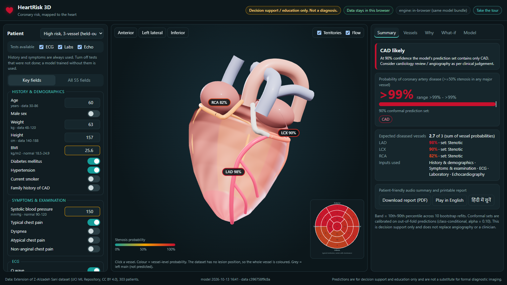

HeartRisk 3D
Multimodal AI Hackathon 2026 · Track A: Cardiovascular Risk Visualization & Prediction · Manas Girdhar, BIT Mesra · repository: github.com/MG782469/heartrisk3d

Figure 1. Patient inputs (left), interactive 3D heart with LAD/LCX/RCA coloured by predicted stenosis probability and an AHA 17-segment bullseye (centre), decision summary with uncertainty (right).
1. Overview
Risk percentages alone do not tell a clinician or a patient where disease is likely. HeartRisk 3D predicts overall coronary artery disease (CAD) and ≥50% stenosis of the LAD, LCX and RCA from routine clinical data, and maps each vessel's probability onto an interactive 3D heart. Every prediction comes with (i) an explanation of which factors and which test types drove it, (ii) an uncertainty range and a 90% conformal prediction set that can say "uncertain: refer", and (iii) safety checks for unusual inputs. A visible disclaimer states that the tool is for decision support and education only.
- Multimodal by design: inputs are grouped into five modalities (history, symptoms/examination, ECG, laboratory, echocardiography). Eight model versions cover every combination of ECG / labs / echo availability, so the tool still works when, for example, echo is not available at a primary health centre, and it shows how much confidence is lost.
- Two engines, one model: a Flask API (scikit-learn + SHAP) and an in-browser engine that runs the same exported model bundle (maximum difference 5×10-11), enabling a no-install live demo where patient data never leaves the browser.
2. Dataset and preprocessing
Data: Extension of Z-Alizadeh Sani dataset (UCI, CC BY 4.0): 303 patients, 59 columns, no missing values. Targets: Cath (CAD 216 / Normal 87), LAD (177 stenotic), LCX (119), RCA (114). CAD equals "at least one stenotic vessel" for 302/303 patients.
- Encoding: Y/N → 1/0, sex → male = 1, BBB one-hot (LBBB, RBBB), VHD ordinal (none–severe), functional class and Region RWMA ordinal; constant
Exertional CP dropped. 55 inputs in 5 modality groups.
- Leakage control:
LAD, LCX, RCA, Cath are never inputs (requirement 1d); an automated test checks every model. Standardisation is fitted inside every CV fold through a Pipeline.
- Split: stratified 80/20 on the number of diseased vessels (242 train / 61 held-out test, seed 42). The test set is touched only for final reporting.
- Trap avoided:
Region RWMA is a 0–4 score with no location. As the problem statement warns, it is used only as a model input and is never treated as an anatomical coordinate.
3. Model architecture
for target in {CAD, LAD, LCX, RCA}:
benchmark 4 families with repeated stratified 5x5 CV (C of logistic regression tuned by nested CV)
deploy the simplest family within 1 SE of the best (1-SE rule)
for modality set in {bedside, +ECG, +labs, +echo, ECG+labs, ECG+echo, labs+echo, all}:
out-of-fold scores (5x5 CV) -> Platt calibration -> Mondrian conformal thresholds (alpha = 0.10)
fit on all 242 training patients + 10 bootstrap refits (probability band)
export model_bundle.json (scalers, coefficients / trees, Platt, conformal, OOD statistics, reports)
| Family | CAD | LAD | LCX | RCA |
|---|
| Elastic-net logistic regression | 0.945 ✓ | 0.847 ✓ | 0.696 | 0.734 ✓ |
| Gradient boosting (150 trees, depth 2) | 0.945 | 0.849 | 0.728 ✓ | 0.694 |
| Random forest (400 trees) | 0.947 | 0.858 | 0.720 | 0.720 |
| HistGB, monotone (age, DM, HTN, typical pain) | 0.936 | 0.839 | 0.719 | 0.683 |
Table 1. Mean CV ROC-AUC (25 folds). ✓ = deployed. Interpretable logistic regression is kept wherever it is within one standard error of the best; only LCX needs boosting.
- Calibration: Platt scaling on out-of-fold scores (isotonic overfits at n = 242). Out-of-fold Brier: CAD 0.078, LAD 0.157, LCX 0.199, RCA 0.198.
- Uncertainty: a 10–90th percentile band from 10 bootstrap refits, and class-conditional (Mondrian) split-conformal sets; the most probable label is always added, which only enlarges a set, so coverage is preserved and a 59% patient can never be called "CAD unlikely". A set of {CAD} reads "CAD likely", {No CAD} "CAD unlikely", both labels "Uncertain: refer to a cardiologist".
- Out-of-distribution: training range check plus Ledoit–Wolf Mahalanobis distance on continuous features (flag above the 99th training percentile). Demo presets are real held-out patients chosen only among in-distribution cases.
- Coherence: expected number of diseased vessels = p(LAD) + p(LCX) + p(RCA) (exact by linearity of expectation); a warning appears if vessel and CAD estimates contradict each other.
4. Evaluation
| Target | ROC-AUC | Accuracy | Precision | Recall | F1 | PR-AUC | CV ROC-AUC |
|---|
| CAD | 0.853 [0.76–0.94] | 0.770 [0.66–0.87] | 0.875 [0.76–0.97] | 0.795 [0.67–0.91] | 0.833 [0.73–0.92] | 0.948 | 0.946 ± 0.038 |
| LAD | 0.791 [0.67–0.89] | 0.754 [0.64–0.85] | 0.788 [0.63–0.92] | 0.765 [0.62–0.91] | 0.776 [0.64–0.88] | 0.821 | 0.853 ± 0.057 |
| LCX | 0.756 [0.62–0.87] | 0.672 [0.54–0.79] | 0.684 [0.46–0.89] | 0.481 [0.30–0.68] | 0.565 [0.38–0.72] | 0.716 | 0.728 ± 0.066 |
| RCA | 0.677 [0.53–0.82] | 0.672 [0.56–0.79] | 0.550 [0.33–0.77] | 0.500 [0.29–0.70] | 0.524 [0.32–0.69] | 0.597 | 0.743 ± 0.074 |
Table 2. Held-out test set (n = 61) with 95% bootstrap CIs (1,000 resamples), threshold 0.5 on calibrated probabilities; last column: repeated 5x5 CV on the 242 training patients.
Reading the numbers honestly. CAD is predicted well. LAD is moderate. LCX and RCA are much harder to predict from these features (AUC about 0.7), and the app labels them as low-confidence through wide bands and frequent "uncertain" conformal sets. The CV–test gap for CAD lies inside the test CI (61 patients).
Multimodal ablation (CV ROC-AUC)
| Inputs available | CAD | LAD | LCX | RCA |
|---|
| History + symptoms (bedside) | 0.917 | 0.802 | 0.675 | 0.740 |
| + ECG | 0.932 | 0.805 | 0.673 | 0.739 |
| + Laboratory | 0.917 | 0.801 | 0.731 | 0.744 |
| + Echocardiography | 0.936 | 0.853 | 0.658 | 0.739 |
| + ECG + labs + echo (all) | 0.946 | 0.853 | 0.728 | 0.743 |
Table 3. Value of each modality. Echo carries most of the LAD signal (+0.05), labs most of the LCX signal (+0.06), ECG adds +0.015 for CAD at the bedside. All 8 combinations are in the app's Model tab.
Figure 2. Left: Model tab (metrics with CIs, benchmark, ablation, ROC, calibration, decision curve, conformal coverage, subgroups). Right: same borderline patient with labs and echo switched off: the bedside+ECG model is used, the band widens and the decision becomes "Uncertain: refer".
- Conformal coverage on test (nominal 90%): CAD 84%, LAD 82%, LCX 85%, RCA 82%; within the ±7-point sampling error of n = 61, but slightly low, which we report rather than tune on the test set. "Uncertain" sets: CAD 13%, LAD 25%, LCX 33%, RCA 36%.
- Decision curve (CAD, out-of-fold): net benefit exceeds "refer all" from threshold 0.2 upward (e.g. 0.61 vs 0.42 at 0.5).
- Negative result kept: a classifier chain (LCX/RCA models also given CAD and LAD scores, fitted inside each fold) did not help: LCX −0.004 ± 0.007, RCA +0.006 ± 0.009 CV AUC, so it was not deployed.
- Subgroups (CV AUC, CAD): male 0.92, female 0.97, age < 60 0.96, age ≥ 60 0.84; the older group is harder (CAD prevalence 88%).
5. 3D visualisation pipeline
- Geometry: procedural heart (lathe profile, leftward apex shift, interventricular and atrioventricular grooves, flatter diaphragmatic wall), atria, aorta and pulmonary trunk, built in code with Three.js (no third-party mesh, so no licence issues; about 40k triangles, responsive even with software WebGL).
- Coronary anatomy: paths are surface coordinates (height, angle) in
anatomy.js: LAD down the anterior interventricular groove to the apex with diagonals; LCX in the left AV groove with an obtuse marginal; RCA in the right AV groove to the posterior descending artery (right-dominant); left main shown in grey as "not predicted".
- Single source of truth: each model output maps to exactly one vessel group in the registry (tested). Adding a structure or a new target is a registry entry, not a redesign; a glTF mesh can be added the same way.
- Risk mapping: each vessel is coloured on a colour-blind-safe teal→amber→crimson ramp with its percentage label. Because the dataset records whether a vessel is stenotic but not where, the whole vessel is coloured; no fake lesion is drawn. Flow particles slow down as risk rises; optional shading of typical supply territories; AHA 17-segment bullseye (LAD 1,2,7,8,13,14,17; RCA 3,4,9,10,15; LCX 5,6,11,12,16) labelled "typical, varies with dominance".
- Interaction: orbit, zoom, click/tap a vessel or its label (opens its card), camera presets (anterior, left lateral, inferior) that orbit around the heart, heartbeat animation.
6. Clinical explanation dashboard
Figure 3. Left: "Why" tab: modality contribution and the patient's top factors, with values compared with normal ranges. Right: "What-if" with the counter-intuitive BMI effect explicitly flagged.
- Summary: decision card (CAD likely / unlikely / uncertain: refer / check inputs), CAD probability with band and conformal set, per-vessel probabilities, expected number of diseased vessels, OOD and coherence warnings, patient-friendly audio summary in English and Hindi (browser speech).
- Why: per-target attributions in log-odds relative to the average training patient: exact linear SHAP (logistic models), TreeSHAP (API) or occlusion-to-mean (browser) for boosting; aggregated by modality to show which test type drove the prediction; abnormal values flagged against reference ranges.
- What-if: only modifiable inputs (BP, BMI, FBS, LDL, HDL, TG, smoking), clearly labelled as model sensitivity and not a treatment effect. In this dataset a lower BMI raises the CAD estimate (confounding, "obesity paradox"); the app detects and explains such cases.
- Workflow: one-click printable report (3D snapshot, predictions, sets, main factors, key inputs, disclaimer) and a 4-step guided tour for first-time users and judges.
- Safety: the disclaimer is visible on every screen; nothing is stored; the API binds to 127.0.0.1 only.
7. System integration
Browser UI (form, Three.js heart, tabs)
| PredictionService: API mode if /api/health answers, otherwise browser mode
+--> Flask API (127.0.0.1) /api/predict /api/whatif /api/metrics /api/schema /api/patients
| scikit-learn models (models.joblib) + SHAP explainers (warmed up at start)
+--> engine.js (same model_bundle.json; GitHub Pages live demo)
Every input change -> debounced (120 ms) prediction -> 3D colours, bullseye, all tabs update
- Tests (pytest, 8 checks): no target leakage in any model; modality sets drop the right features; each vessel maps to one 3D structure; API contract; API equals exported bundle; reduced model used when tests are missing; typical chest pain raises CAD risk (sanity); Node parity of the browser engine.
- Reproducibility: fixed seeds, pinned
requirements.txt, dataset SHA-256 shown in the app footer, one command to retrain.
8. Usage
pip install -r requirements.txt
python app/server.py # open http://127.0.0.1:8000 (Windows: run.bat)
python ml/train.py # optional: retrain everything, rewrites artifacts/ and web/data/
python -m pytest -q # run the checks
Live demo without install: https://mg782469.github.io/heartrisk3d/
Pick an example patient (real held-out cases) or enter values; switch off tests that were not done; click a vessel; open Why, What-if and Model. Deep links such as ?preset=1&off=labs,echo&tab=why reproduce any view.
9. Limitations
- Single-centre dataset of 303 patients; no external validation; test estimates have wide CIs.
- LCX and RCA discrimination is modest (AUC about 0.7); outputs are flagged accordingly.
- Associations, not causes; what-if is not treatment advice.
- The heart and territories are illustrative, not patient-specific anatomy; lesion position is not available.
References: Z-Alizadeh Sani dataset, UCI ML Repository (CC BY 4.0); Cerqueira et al., Standardized myocardial segmentation, Circulation 2002; Angelopoulos & Bates, A gentle introduction to conformal prediction, 2021; Lundberg & Lee, SHAP, NeurIPS 2017; Vickers & Elkin, Decision curve analysis, 2006; Three.js (MIT).